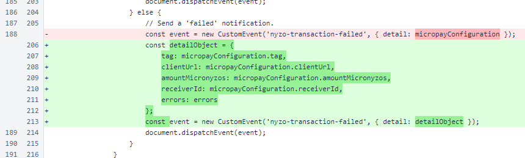
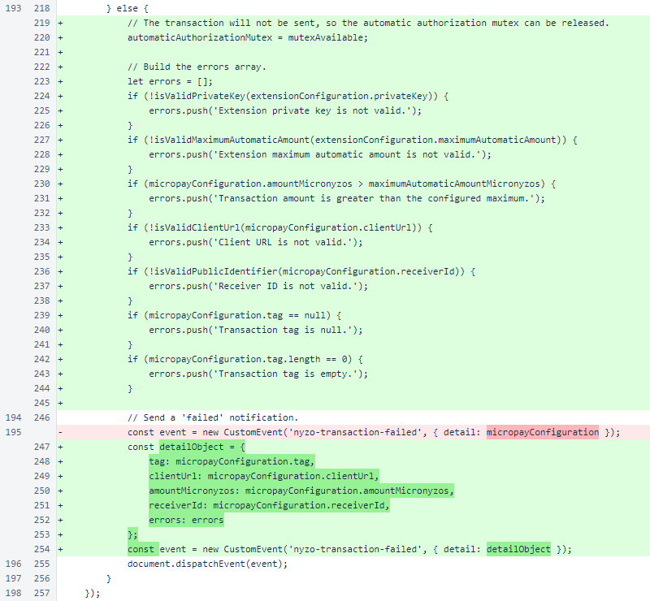
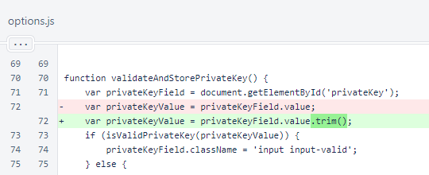

Nyzo Chrome extension version 9 (commit on GitHub) adds a mutex to ensure that the automatic authorization is properly applied and decremented when automatic transactions are submitted rapidly.
In the Byte
In the Byte
In the send
In the send
When a transaction fails, error details are now included in the nyzo-transaction-failed event to allow the page to communicate the cause of the error to the user.
When a transaction is not sent due to an issue identified by this script, the mutex is released without updating the authorization value. An error is also included in the nyzo-transaction-failed event sent from this logic branch.

In the decode() function of the nyzo
In the options script, whitespace is now trimmed from the private key value before storage.

In the Transaction constructor, the type is now explicitly specified as
2, which is a standard transaction. This was implicit in previous versions. Variable
scoping was updated for two iterators, and the set
Later in the Transaction class, scoping was updated for the iterator in the
set
In the Transaction.from